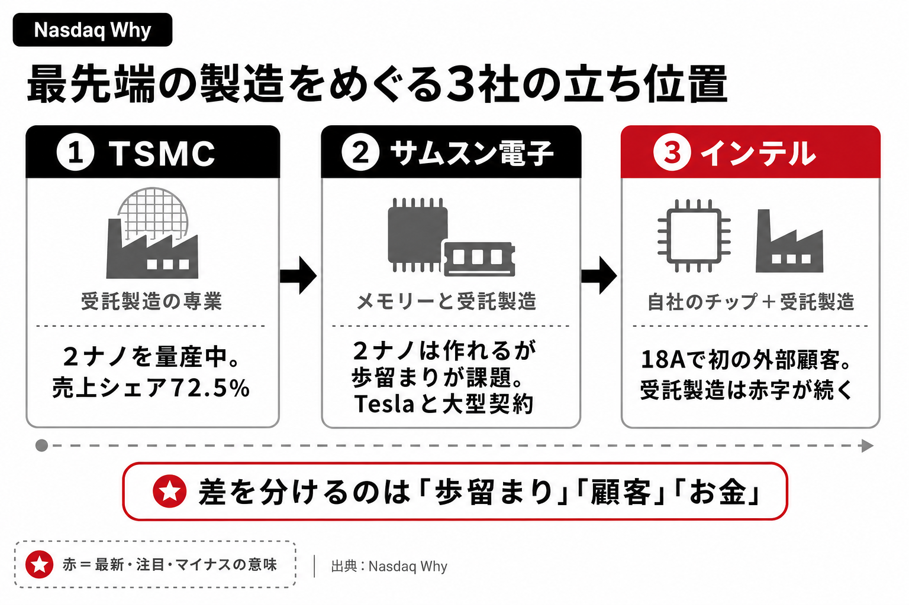
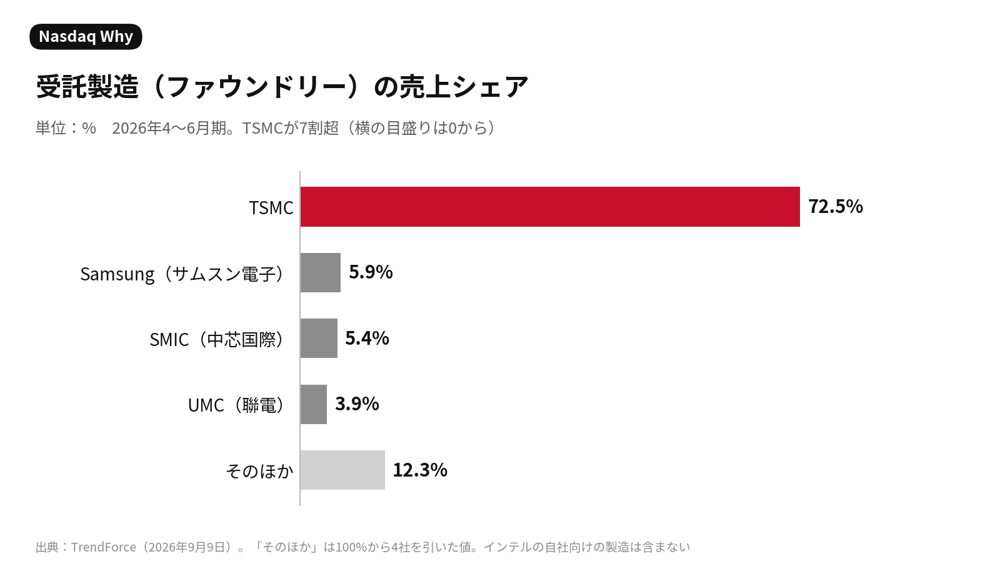
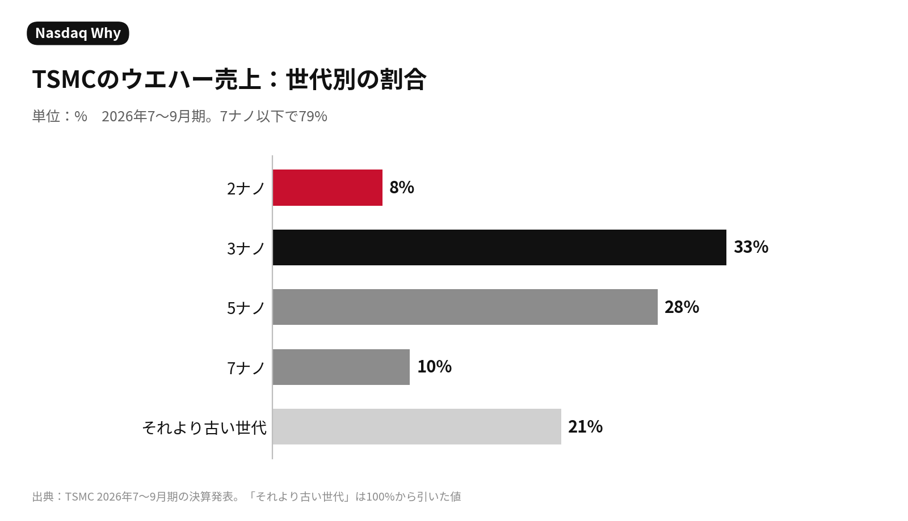

半導体の特集 第3回
TSMC・サムスン・インテル、なぜ最先端の製造はTSMCに集まるのか？
半導体の特集、第3回です。チップの製造を請け負う受託製造（ファウンドリー）では、TSMCが売上の7割超を占めています。サムスン電子とインテルも最先端の工場を持っているのに、なぜここまで差がつくのでしょうか。「歩留まり」「顧客」「お金」の3つから見ていきます。今週始まった米国の新しい規制で、製造の行き先がどう変わるかにも触れます。

TSMCは受託製造の売上の7割超
第2回で見たように、エヌビディアは設計だけをして、製造はTSMCに任せています。こうした製造を請け負う会社を「ファウンドリー」と呼びます。
調査会社TrendForceによると、2026年4〜6月期の受託製造の売上は、TSMCが約402億ドルでシェア72.5%でした。2位のサムスン電子は約32.6億ドルで5.9%、3位の中国のSMIC（中芯国際）は5.4%です。1位と2位の差は10倍以上あります。

TSMCの売上は、ほぼ最先端の製造から
TSMCの2026年7〜9月期の売上は467.2億ドルで、前年同期より41.2%増えました。売上総利益率は66.4%です。
ウエハーの売上のうち、7ナノ以下の最先端の製造が79%を占めます。3ナノが33%、5ナノが28%、2025年10〜12月期に量産を始めた2ナノは8%（前の期は3%）まで増えました。

サムスン電子：2ナノは作れるが「歩留まり」の壁
歩留まりとは、1枚のウエハーから取れるチップのうち、ちゃんと動く良品の割合です。これが低いと、同じ工場の費用で売れるチップが減り、利益が出ません。
サムスン電子は2025年に2ナノの量産を始めました。ただ、2026年4月時点でも歩留まりは約55%と報じられ、利益を出せる水準を下回っているとされます。
一方で、Teslaとは2025年7月に165億ドルの契約を結び、次世代のAIチップ「AI6」を米テキサス州のテイラー工場で作る予定です。サムスン電子は受託製造だけの損益を公表していないため、赤字かどうかを外から確かめにくい点にも注意が必要です。
インテル：自社の工場を他社に開く途中
インテルはもともと自社のCPUだけを作ってきた会社で、いま工場を他社にも開こうとしています。2026年7〜9月期の受託製造の事業（Intel Foundry）の売上は約67億ドルですが、ほとんどは自社向けで、外部の顧客からの売上は約4.1億ドルでした。事業は約18.5億ドルの赤字です。
11月18日、リップブー・タンCEOは、最先端の「18A」で初めて外部の顧客と契約したと述べました。顧客の名前や規模は明かしていません。次の世代の「14A」は、顧客が決まってから設備を増やす方針です。
なぜTSMCに集まるのか
3社の差は、次の3つが重なって生まれています。
- 歩留まり：量産で良品を安定して作れる実績があると、新しい注文も集まる
- 顧客：TSMCは自社のブランドのチップを売らない専業。顧客と競合しないため、エヌビディアやアップルなどが設計を預けやすい
- お金：TSMCは2026年の設備投資を600億〜640億ドルと見込む。稼いだお金で次の工場を建て、差がさらに広がる
今週の変化：中国向けの製造の道が狭く
11月19日に始まった米国の新しい規制で、TSMCは中国の一部の顧客について、16ナノ以下の受注を米国の許可が出るまで止めたと報じられました（Reuters）。サムスン電子も一部の出荷を止めたと報じられています（Financial Times）。
その一方で、中国国内のSMIC（中芯国際）は4〜6月期の売上が前の期より20%増え、サムスン電子との差を縮めています。規制は、最先端の製造が米国の同盟国の会社に集まる流れと、中国が国内で作る流れの両方を強める可能性があります。詳しくは深掘り記事「中国向けAIチップ、約88万個の輸出を承認」で整理しています。
次に見るもの
最先端の製造は、当面TSMCの一強が続きそうです。追う2社が差を縮められるかは、次の点で確かめられます。
- TSMC：10〜12月期の売上（見通しは523億〜543億ドル）と2ナノの割合
- サムスン電子：2ナノの歩留まりと、Teslaの「AI5」「AI6」の量産の時期
- インテル：18Aの外部顧客の名前と規模、14Aの顧客が決まるか
- TrendForceの7〜9月期の受託製造ランキング
次回（第4回）は「半導体はなぜ足りなくなったり、余ったりするのか？」の予定です。
出典
- TrendForce：Global Foundry Revenue Approaches US$53.49 Billion in 2Q26（2026年9月9日）
- TSMC：2026年7〜9月期の決算発表（SEC 6-K）
- Tom's Hardware：Samsung's fab roadmaps examined
- 24/7 Wall St.：Intel's CEO Says It "Just Signed the First Customer" for 18A（2026年11月19日）
- S&P Global：TSMC postQ（2026年の設備投資の見込み 600億〜640億ドル）
- Reuters：TSMC tightens China AI chip curbs as new US rules close manufacturing loophole（2026年11月19日）